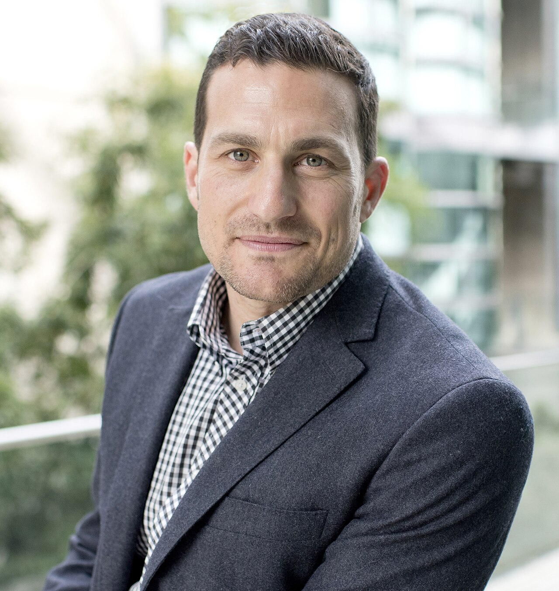

|

|
Social Name |
Andrew Huberman |
| Full Name |
Andrew David Huberman |
| Birth |
September 26, 1975 (age 50) Palo Alto, California, U.S. |
| Nationality |
American |
| Alma mater |
- University of California, Santa Barbara (UCSB) – Bachelor of Arts (B.A.) in Psychology (1998)
- University of California, Berkeley (UC Berkeley) – Master of Arts (M.A.) in Psychology (2000)
- University of California, Davis (UC Davis) – Doctor of Philosophy (Ph.D.) in Neuroscience (2004)
|
| Occupation |
- Tenured Associate Professor of Neurobiology at Stanford University School of Medicine.
- Host and creator of the globally top-ranked Huberman Lab Podcast.
|
| Years Active |
From 2011 to Until now |
| Height |
6 feet 1 inch (approximately 185 cm) tall |
| Spouse(s) |
Not married yet |
| Children |
None |